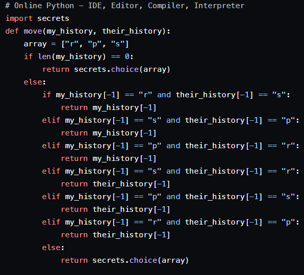
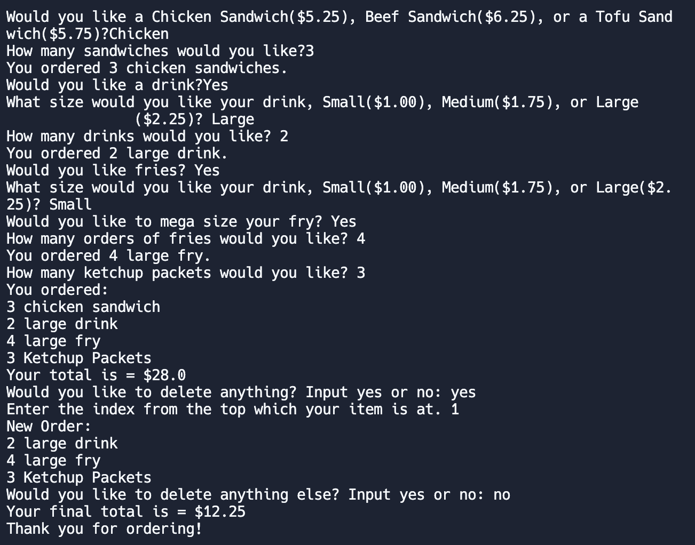

Rock Paper Scissors
March 2024, Computer Science Essentials
The objective of this project was to create the most effective rock paper scissors strategy that ensures the most wins. My strategy for this project was to analyze patterns within the games. The code returns the same output in case of a win to maintain winning streaks and in cases where my code loses I return whatever my opponent returns to counter them. In cases where there is a tie my code returns a random output to meddle with the opponents strategy and to break tie streaks, returning to a consistent strategy.
Automated Ordering
February 2024, Computer Science Essentials
The objective of this project was to create an automated code for ordering in a restaurant. The code enables the ordering of various items like sandwiches, fries and drinks, and enables the customization of the size of the food. Additionally, it provides discounts if you buy a complete meal, and you can order multiple of one item. In cases where you may have ordered the wrong item, you have the option to delete old items and have the order you want. It returns your total at the end and returns a new total everytime you delete an itel and at the end asks you to pay.